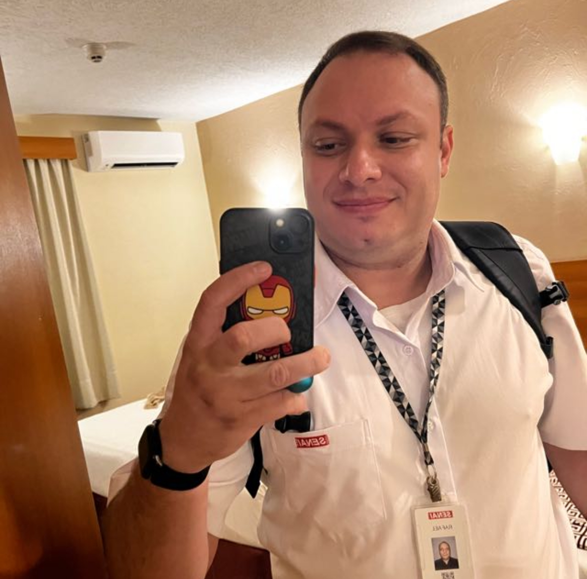

Autor
Professor Rafael Selvagio
Criador do projeto Sílabas Divertidas, com foco em alfabetização infantil, leitura silábica e apoio visual e sonoro no navegador.
Sobre o autor
Professor Rafael Selvagio desenvolveu este projeto para apoiar atividades de leitura com uma interface lúdica, simples de usar e pensada para crianças, responsáveis e educadores.
O app foi organizado para funcionar sem backend obrigatório, com foco em facilidade de publicação, autonomia no navegador e evolução contínua das atividades.
GitHub do autor: github.com/professor-rafael-selvagio
Tecnologias utilizadas
- VS Code para edição e organização do projeto.
- HTML para estrutura das páginas.
- CSS para layout, identidade visual e responsividade.
- JavaScript para interações, áudio e persistência local.
- Codex como apoio de desenvolvimento e evolução do código.
Objetivo do projeto
- Facilitar a exploração de sílabas separadas com forte apoio visual.
- Oferecer atividades complementares com letras, sílabas e músicas.
- Criar uma base simples de manter e fácil de publicar no GitHub Pages.
QR Code do GitHub
Escaneie o QR Code para abrir o perfil do autor no GitHub.
Repositório do projeto
Link do repositório: github.com/professor-rafael-selvagio/silabas
Escaneie o QR Code para abrir o repositório do projeto no GitHub.